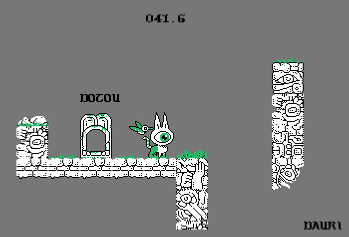

About
About Projects
Projects Books
Books Games
Games Stories
Stories Store
Store Notes
Notes How-to
How-toPolycat is a small twitchy parkour-type game that devine and & made for the 2025 CatJam, finished on July 21st 2025.
Play PolycatIf you play the game, try to finish it in less than a minute. If you record yourself doing it in less than 45 seconds, send us a link and we'll put it in the game description!
It was a good opportunity to include my character polycat in a game, and to draw cute animations.
